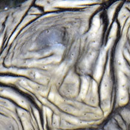
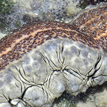
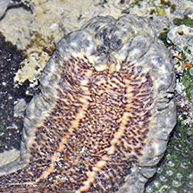
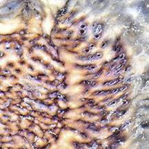

|
|
| sea cucumbers text index | photo index |
| Phylum Echinodermata > Class Holothuroidea |
| Zebrafish
sea cucumber Stichopus vastus Family Stichopodidae updated Apr 2020 Where seen? This large sea cucumber is sometimes seen on Pulau Semakau, in deeper water coral rubble. It is also called the Curryfish as it is among the sea cucumbers that are edible and harvested for the restaurant trade. Elsewhere, it is found in seagrass meadows, particularly Tape seagrass and Sickle seagrass. It is also found under coralline algae. Larger individuals live in deeper soft coral rubble areas outside of seagrass habitats. Also said to live on hard bottom and rubble. Features: 20-30cm. Body hard heavy, squarish in cross-section, blunt at the ends, With large conical bumps in 5 to 6 irregular rows, the base of these bumps surrounded by fine dark lines. Smaller bumps all over the upper surface. Colour usually sandy with darker patches and variable dark brown stripes between and around the large conical bumps. May also brownish, yellowish, reddish, greenish or greyish. Distinct flat underside is brown or yellow with short tube feet appearing in three rows along the body length. Mouth is downward facing with 18-20 feeding tentacles surrounded by a collar of bumps. The animal may disintegrate if it is handled or take out of water for a long time. So please don't touch it. Human uses: According to the IUCN Red List: "It is commercially harvested through out much of its range. Although this species is of current low value in fisheries, it can be expected that this species may become more popular after the depletion or reduction of other species of higher commercial importance and value. There is a subsistence fishery in Palau targeting gonads and/or intestines. The species is heavily exploited in Indonesia." |
 Large conical bumps with dark stripes. |
 Flat underside. |
 Short tube feet in three broad rows. |
 Short tube feet. |
|
Links
References
|